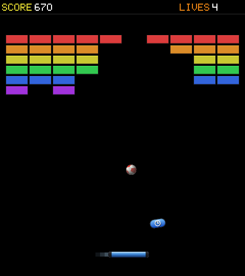
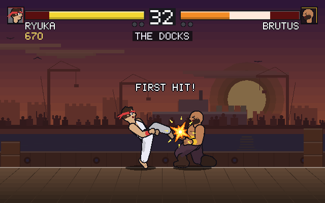
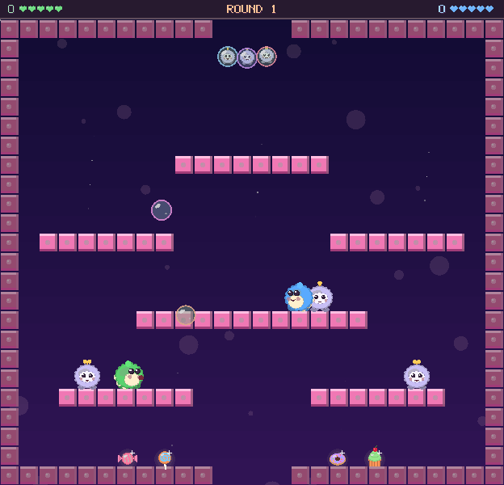
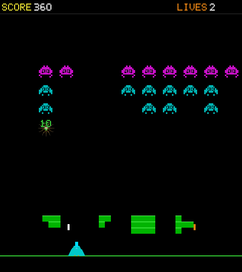
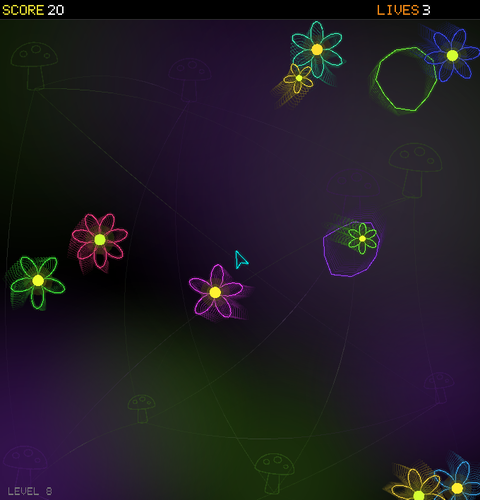
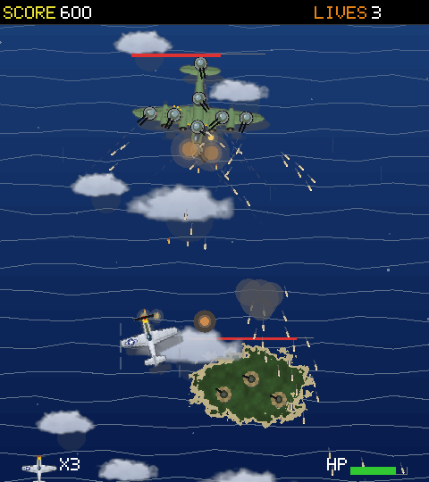
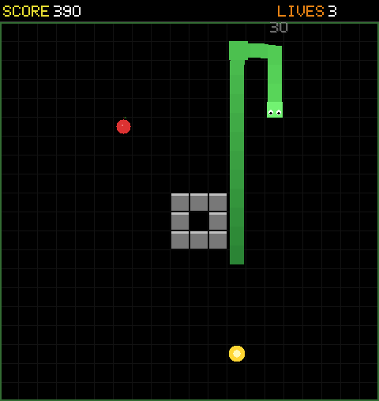

CONTROLS
HOW TO PLAY ON PC AND MOBILE
Play on iPhone and iPad
Tap a game on the Home Screen to play it. A game opened this way is free to play, and its picture is clean and sharp, without the cabinet’s CRT effects.
To go back, tap Home in the top-left corner. To see a game’s controls while you play, tap the question mark at the top of the screen, then tap Guide for the game’s full page.
To keep a game on your own Home Screen, touch and hold its icon, then tap Add to Home Screen and follow the steps. A game added this way opens straight into play.
To arrange the icons, touch and hold an empty part of the Home Screen until the icons jiggle, then drag them where you want them. Tap Done when you finish.
To choose how you play, use the switch above the controls: Joystick, D-pad or Touch.
Choosing a game
Move the joystick or pad to bring a card to the front. On a keyboard, use the arrow keys or W A S D. Then press either red button, Space or Enter to load the game. The cards are for display only.
Whenever you need a hand, lift the manual from the lower deck. Its contents lead straight to each game’s instructions. Turn a page with the folded corners or the left and right arrow keys, and press Escape to put the book down.
Every game can be played on the keyboard. Each has its own playing notes in the game index and key hints on its title screen. These keys work everywhere:
| Move / aim | ←↑↓→ or WASD |
| Button 1 — fire / launch / serve | Space |
| Button 2 — second action | Z (Meteors hyperspace only) |
| Insert coin | 5 |
| Back to the arcade | Esc or Backspace (or the BLIP logo) |
| Sound on / off | M |
| Fullscreen | Use the browser’s fullscreen command; Esc leaves |
Turn to the game index for each game’s controls and playing notes.
A connected controller is picked up automatically. The left stick or D-pad moves; the bottom face button (A / ×) is Button 1 and the right face button (B / ◯) is Button 2. The on-screen stick and buttons light up to mirror whatever the pad is doing.
On a touch screen the control deck is a pad: a big d-pad and two red buttons along the bottom of every game and of the catalogue. Every button gives a soft click as you press it:
| D-pad (left) | Press, or roll your thumb across it, to move or aim in any of eight directions. Let go to stop. |
| The two red buttons | Press to start, fire, launch or serve. In Meteors, Brawler and Bubbler the two buttons do different jobs; see each game’s playing notes. |
| Coin slot | The metal coin slot at the right of the lower deck. Press it to add a credit; the P1 lamp lights when a credit is waiting. |
The pad lights up under keyboard and gamepad input too, so on a laptop it doubles as a live read-out of what you are pressing.
Choose your controller with the small JOYSTICK · PAD · TOUCH switch on the panel. JOYSTICK swaps the pad for an eight-way restrictor-gate joystick and two fire buttons; TOUCH is the thumb-on-glass way to play, described below. Your choice is remembered across every game.
Many people first learned to play on a phone: a fingertip on glass instead of a joystick, a swipe instead of a button. These games come from the arcades of the 1970s and 80s, and here they meet you on the screen in your pocket. No controller or download is needed: choose a game with the cabinet controls, then play.
Choose a card with the cabinet’s pad or joystick and press a red button. Inside a game, choose TOUCH to play directly on the glass:
| Serpent | Swipe the way you want the snake to turn. Tap to start. |
| Bouncer | Drag along the strip and the paddle follows your finger. Tap to launch the ball. |
| Defender | Drag to move the cannon; it fires while your finger is down. |
| Rally | Drag up or down to move your bat. Against the computer the whole screen is yours; with two players each has a half. |
| Bubbler | Every touch blows a bubble the moment it lands. Slide to run, swipe up to jump. |
| Meteors, Raider, Brawler | Played on the on-screen pad: the d-pad under your left thumb, the two buttons under your right. |
Turn your phone sideways for a bigger picture and room for both thumbs. On phones that support it, a light buzz answers hits and taps.
Three games are made for two people at one screen: Rally, Brawler and Bubbler. A two-player game takes two coins, one from each player, just like the cabinets did.
| Rally | Press 2 on the title screen (or turn the right-hand dial) for two players. Player 1: W/S or ↑/↓. Player 2: I/K. On touch, each player drags on their own half of the screen. |
| Brawler | Choose 2 PLAYERS on the title screen. Player 1: WASD, F punch, G kick. Player 2: the arrow keys, J punch, K kick. Hold toward your opponent as you press for a high attack. |
| Bubbler | A friend can join at any time: player 2 presses J or K, or taps 2P JOIN on a touch screen. Player 1: WASD, F bubble, G jump. Player 2: the arrow keys, J bubble, K jump. On touch, player 2 plays on the right half. |
When a second player comes in, the panel grows a second station: player 1 on the left, player 2 on the right, each with their own stick and buttons. Hold a phone or tablet sideways and each of you gets a side of the screen.
Rally puts away the joystick and gives each player a rotary dial instead — player 1 on the left, player 2 on the right. Twist a dial with your thumb like a real knob and your bat slides with it; spin it faster and the bat moves faster. On the title screen, tap the left dial to start a 1-player game against the computer, or the right dial for two players.
Why a dial? The original Pong (Atari, 1972) was played exactly this way. Allan Alcorn built it as a warm-up exercise set by Nolan Bushnell, and wired each player's bat to a single potentiometer knob mounted in the cabinet — you turned it to slide your paddle up and down, and that was the whole control scheme. The first machine, dropped into Andy Capp's Tavern in Sunnyvale, jammed within days because its coin box had overflowed. The dial here is a small tribute to that knob.
1.1 Adder

A tribute to Viper, a shareware snake for the Amiga and DOS from 1994 that almost nobody played. Adder keeps its free movement and crowded pit, computer-controlled vipers included, but leaves thin solid trails with dim gaps. Last alive wins the round.
How to play
Turn your viper left or right relative to its heading with the stick or keys; release to keep going straight. On touch, horizontal position steers; click or tap only starts. All worms move at a constant 85 px/s, leaving thin solid trails that keep growing within the round. Walls and solid trails, even your own, eliminate you. Dim gaps are laid down as the worm grows, never cut into an existing trail. They remain passable; only the first pass through each scores 50 × round.
| Turn | A / D or Left / Right |
| Second player | Press J to join. From then on the arrows are theirs and player one keeps A / D. |
| Start / restart | Space |
No food, eggs, shedding or boost/strike. Dead worms leave their trails on the floor and stay out until the next round. Last alive wins; trails reset next round. Each human has three lives across rounds and loses one on elimination; game over when no human has lives left. Up to six vipers share the pit; the rest are CPUs.
1.2 Bouncer

Our answer to Breakout (Atari, 1976). A wall of coloured bricks, one ball and a paddle that does more than it looks: it can dash, and the bricks you break drop bonuses that widen it, slow the ball, split it in three, or bring a spare life. Beware the narrow-paddle drop, and the bomb bricks that take their neighbours with them.
How to play
Keep the ball in play and clear every brick. One missed return costs a life.
| Move | A / D or Left / Right |
| Launch | Space, W or Up |
| Dash | Double-tap a direction |
On the touch surface, drag to position the paddle and tap to launch. Save your dash for a ball that is getting away.
1.3 Brawler

A one-on-one fighting game in the spirit of Street Fighter II (Capcom, 1991). Nine cartoon fighters, each with a style of their own, take on a ladder of nine challengers. Two attack buttons, high and low guards, special moves, and barrels to smash between bouts. A second player can take over a fighter at any time.
How to play
Choose a fighter and work your way through nine challengers. Watch the opponent’s stance before committing to a blow.
| Move | W A S D or arrows |
| Punch | Space or F |
| Kick | Z or G |
| Special move | Punch and kick together |
| Two players | Player 1: W A S D, F, G. Player 2: arrows, J, K. |
Hold toward the opponent while attacking for a high blow. Guard high or low; one guard cannot cover both. Break the barrels for bonus points.
1.4 Bubbler

A tribute to Bubble Bobble (Taito, 1986), made for small hands and big grins. Blow a bubble around a monster, pop it, and sweet rewards tumble out. Clear every monster to move on to the next room. One or two players, and nothing in it is scary.
How to play
Trap a monster inside a bubble, then pop it to collect the reward. Clear the gang to move to the next room.
| Run | A / D or Left / Right |
| Bubble | Space or F |
| Jump | W, Up, Z or G |
| Second player | Press J or K to join. Then: arrows, J bubble, K jump. |
Pop several bubbles together for a bigger haul. Hold jump to ride a bubble. On the touch surface, slide to run and swipe upward to jump; touching the surface blows bubbles.
1.5 Defender

Space Invaders (Taito, 1978) with a few new tricks. Rows of aliens step down the screen, shields crumble under fire, and a saucer drifts across the top for bonus points. Some saucers stop and charge a death ray, a lone diver breaks from the ranks, and every fifth wave ends with a mothership.
How to play
Keep the alien fleet away from Earth. Move beneath the invaders and shoot before they reach the ground.
| Move | A / D or Left / Right |
| Fire | Space |
On the touch surface, slide to position the cannon and hold to fire. Clear a lane before the fleet gets too close.
1.6 Meteors

Asteroids (Atari, 1979): a ship that coasts, spins and fires into a field of rocks that split into smaller rocks. Saucers cross the screen and shoot back, and when you are cornered there is hyperspace — a quick jump to somewhere else, with no promise of where.
How to play
Pilot through the asteroid field. Large rocks split into smaller pieces, so keep an escape route clear.
| Turn | A / D or Left / Right |
| Thrust | W or Up |
| Fire | Space |
| Hyperspace | Z |
Use short bursts of thrust to keep the ship under control. The second red button is hyperspace; the first fires.
1.7 Raider

A vertical shooter in the manner of 1942 (Capcom, 1984). Take off from the carrier and fly over open sea, islands and enemy gun boats, then face a boss at the end of every stage. Your throttle is your own to manage: fly too slowly and the plane stalls.
How to play
Fly through the islands and coastline to the mainland. Bring down enemy aircraft and keep clear of the ground batteries.
| Steer | A / D or Left / Right |
| Throttle | W / S or Up / Down |
| Fire | Space |
Use the throttle to choose your pace. Fly too slowly and the plane stalls. Watch for flak as well as the aircraft ahead.
1.8 Rally

Pong (Atari, 1972), as plain as it started. Two bats, one ball, first to seven. Every return sends the ball a little faster. Play the computer, or turn the other dial and play a friend.
How to play
Keep the ball past the other paddle. The first player to seven points takes the match.
| 1 player | W / S or Up / Down |
| 2 players | I / K (the second bat) |
| Start and serve | Space (or any key to serve) |
On the touch surface, each player drags in their own half. The rally speeds up with each return. Two-player play uses one credit for each player.
1.9 Serpent

Snake, the game that has lived on arcade boards and a million phones. Eat to grow, and do not bite yourself. Bonus fruit appears for a few seconds and then leaves, and obstacles arrive as the levels climb.
How to play
Steer the serpent toward food and leave room for its growing tail. A collision ends the run.
| Steer | W A S D or arrows |
| Start | Space |
On the touch surface, swipe in the direction you want to travel.